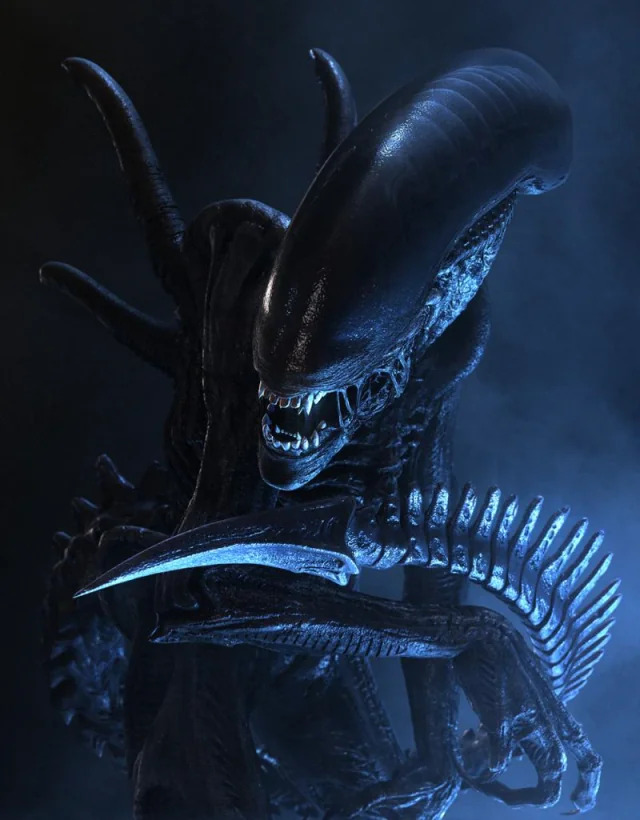

XENOMORPHS


Hello!
If you're here, then you are by mistake or you love the world of Alien like I do.
Alien is a beloved franchise that has seven movies, a tv show, multiple games, books, figurines, and several comics. Since the first appearance of the Xenomorph in Alien (1979), there has been a mulitude of variations and takes on the Xenomorph's looks and designs.
I am a massive fan of this franchise and the Xenomorph design is one of my favorite monster designs ever. There is something so beautiful about the look of the biomechanical the Xenomorph has.
Here, I will be going over some of my personal favorites from both the movies and the comics. Also, I will talk about even some named Xenos from the movies and games.
Press the names to go to the linked pages.
Named Xenomorphs | Drone | Warrior | Best Xenomorph | Xenomorph Runner